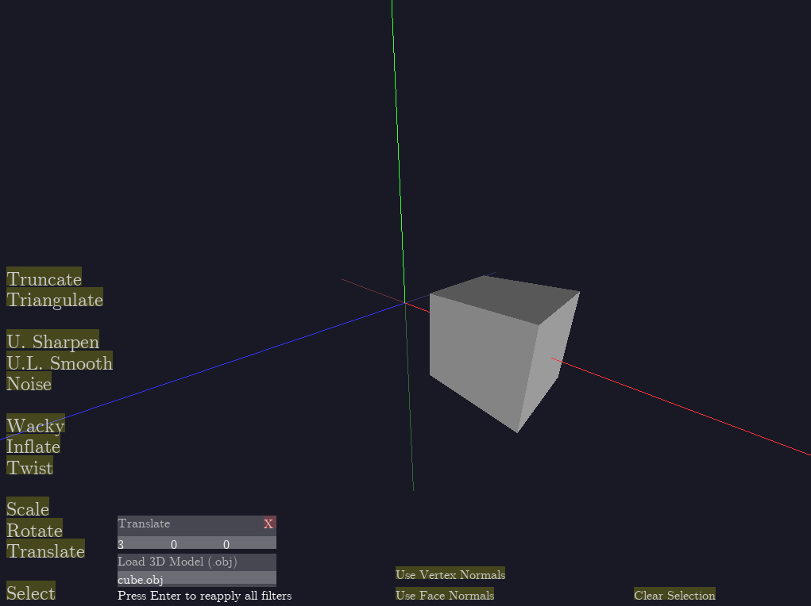

COS426 Assignment 2Modeling — Writeup
Switch to: Interactive Editor
- (3.0) Translation
- (1.0) Rotation
- (0.5) Scale
- (1.5) Traversal
- (0.5) Face Area
- (0.5) Per-vertex Normals
- (0.5) Average Edge Lengths
- (0.5) Twist
- (1.0) Inflate
- (1.0) Wacky
- (1.0) Noise
- (1.5) Smooth
- (1.0) Sharpen
- (0.5) Triangulate
- (2.0) Truncate
- Half Edge mesh data structure
- Parsing OBJ files into a Half Edge mesh
- Loading and rendering arbitrary meshes in OpenGL
- Basic diffuse shading with GLSL
- Hot re-loading of meshes after modifications, with the option of selecting between vertex or face normals
- Filter selection, compounding, and removal system
- Mouse position raycasting against 3D mesh, closest face collision detection
- Text rendering, with the help of FreeType
- Interactive GUI elements in pixel coordinates
- Math library with Vectors, Matrices, Quaternions
Important Note
I developed this assignment from scratch in C++, using OpenGL and GLFW for cross-platform window creation, input handling, and GL context creation and binding. I recreated the JS GUI as well as I could. All source code is in the "src" folder and is written by me, except for "glew.c" and possibly a few borrowed excerpts.
I had to re-implement mostly all of the systems that are given to us. These include, but are probably not limited to:
In his office hours on March 9, Amit Bermano said a C++ implementation would be acceptable, and that I should turn it in as a Windows executable file, which is what I have done. The two external libraries I used (GLFW and FreeType) are statically linked, so program should require no external libraries other than the Visual C++ runtime (the latest one should work). The executable is in the "build" directory.
The GUI controls are similar to the ones in the JS application. Clicking and dragging rotates the camera, scrolling controls the zoom, and clicking on the filters adds them to the active filters list. The red/green/blue lines correspond to the x/y/z axes, with the more colorful halves of the lines representing the positive direction.
One of the main differences is that there are no parameter sliders: each value must be typed in (click the input field, and type the value). Since the implementation of these secondary systems (GUI input, etc) wasn't the main objective of the assignment, they are not tested for robustness, so please don't actively try to break them (unless you find that amusing, of course).
Another significant difference is how vertex selection works. You can select vertices by clicking faces, but you can't select vertices one-by-one, because I wasn't sure how to make them easily clickable. In order to use the current selection with other filters, you must manually add a "Select" filter with the desired selection. You always have the option to type in vertex indices into this selection filter box.
Translation
Implemented near the top of filters.cpp.
Loop through every vertex, add the offset vector to its position.
Translate(3, 0, 0):

Rotation
Implemented near the top of filters.cpp.
Using my Quaternion implementations in the math library (km_math.h), I compounded three rotations along the unit axes in the required order (x-y-z), and multiplied each vertex position of the model by these quaternions.


Scale
Implemented near the top of filters.cpp.
I multiplied each vertex position by the scalar value of the scale magnitude.


Traversal
Implemented at the bottom of halfedge.cpp.
For the adjacent elements of faces, I started at the half-edge that the face points to, and looped around, following each half-edge's next element, until I arrived back at the starting half-edge. To get to the vertices, I looked at each half-edge's vertex. To get to the faces, I looked at the face of each half-edge's twin half-edge.
For the adjacent elements of edges, I looked at the vertex or face that the given half-edge and its twin half-edge pointed to.
For the adjacent elements of vertices, I started at the half-edge that the vertex points to, then followed its twin half-edge, and the next vertex after it, until I arrived back at the starting half-edge. To get to the vertices, I looked at each outgoing half-edge's vertex. To get to the faces, I looked at each outgoing half-edge's face.
Face Area
Implemented in halfedge.cpp
I implemented a helper function that calculates the area of a triangle. Then, I store the first two vertices of the face, v1 and v2, and loop through every other vertex v. I sum the areas of all the triangles (v1, v2, v) to get the area of the face.
Per-vertex Normals
Implemented in halfedge.cpp
I loop through each face adjacent to the given vertex, and set the vertex's normal to the average of the face normals. The image below shows the effect of using per-vertex normals in the basic diffuse shading model used to render these meshes. Very smooth, compared to what it looks like in the Rotation images.

Average Edge Lengths
Implemented in halfedge.cpp
I loop through each vertex adjacent to the given vertex, and set the vertex's average edge length to the average distance to each adjacent vertex. The image below is a visualization of the average edge lengths per vertex, which are displayed as the red component of the vertex colors sent to the shaders.

Twist
Implemented near the top of filters.cpp.
I rotate each vertex about the y-axis by the product of its y coordinate and the twist parameter, using Quaternions. I used per-vertex normals in the images below to make them look nicer.


Inflate
Implemented near the top of filters.cpp.
Having computed vertex normals and average edge lengths for the mesh, I add each vertex normal, scaled by the inflate parameter and the average edge length for the vertex, to every vertex in the mesh.


Wacky
Implemented near the top of filters.cpp.
I offset the x-component of each vertex by the sine of its y-component, with a fixed period of 0.25. The parameter for this filter controls the magnitude of the scaling.

Noise
Implemented near the top of filters.cpp.
For each vertex, I generate a random value between -1 and 1, and scale it according to the noise parameter. I then offset each vertex by its vertex normal, scaled by this random value.


Smooth
Implemented near the top of filters.cpp.
For each iteration, I have to maintain a copy of the mesh in order to keep the original vertex positions. For each vertex, I move it in the direction of the average of its adjacent vertices, scaled by the parameter delta.


Sharpen
Implemented near the top of filters.cpp.
The same as Smooth, but each vertex moves in the opposite direction.


Triangulate
Implemented as TriangulateMesh in halfedge.cpp
For each face, I start looping through its edges. As long as I find 4 distinct edges in the face, I split the face using SplitFaceMakeEdge (which I had to implement myself), such that a new triangular face is created, which I append to the mesh.
Since my GUI doesn't indicate where the edges are, I've picked some triangles and scaled them up so that the seams are visible. I suppose it wouldn't have been that difficult to enable a wireframe rendering mode.


Truncate
Implemented near the top of filters.cpp.
This was one of the trickier functions to implement, though the reason it took me so long was that I wasn't properly handling the removal of vertices from my mesh structure (everything is referenced by index, so I must decrease all indices upon removal of a vertex).
To implement this, I used SplitEdgeMakeVertex, which I also had to implement myself. I built in the parameter "t" into this function. I first split the neighboring edges for each vertex, and then used the old edges to stitch these new vertices together into a new face.